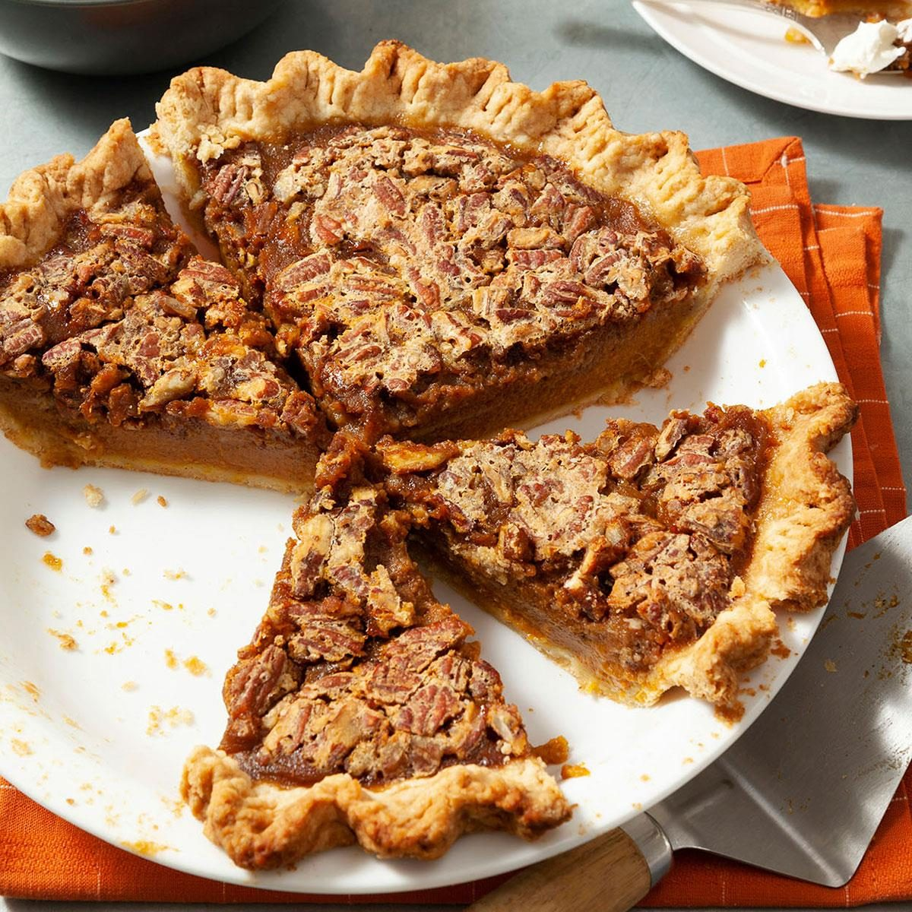

Back to Main Page
Pecan Pumpkin Pie

Description
This pie blew my mind the second I had it. I was so reluctant to try it because I'm generally very meh with pumpkin as a vegetable,
so when I heard Pumpkin Pie I was like ...a pie made of a very average (or below) tasting vegetable? Mediocre at best.
But boy/girl was I wrong.
Thick crunchy crust, soft pumpkin layers, with whipped cream, and the most amazing pecans.
I could have the whole pie within a few hours. Just writing this has made my mouth watery.
Insane whoever invented this dish.
Ingredients
- Pecans
- Eggs
- Corn Syrup
- Brown Sugar
- Pure Vanilla Extract
- Butter
- Salt
- Cinnamon
Steps
- Cream sugars, salt, corn syrup, and butter. Add eggs and beat well, then stir in the vanilla.
- Add Pecans: Stir in the pecans (leave out a small handful to place on top later) until incorporated.
- Pour the mixture into an unbaked 9 inch pie shell. Add a few of the reserved pecans on top of the pie in any empty spots, to make it look pretty. Use a small spoon to cover them with batter.
- Bake the pie at 425 for 10 minutes, then reduce heat to 350 degrees and continue to cook for 40 minutes. Check on it half way through cooking and tent a piece of aluminum foil over the crust if it's getting too browned - I spray the foil with non-stick cooking spray and try and tent it so it doesn't touch the pie filling, so that the filling doesn't stick to the foil.
- You will know your pecan pie is done cooking when you can gently shake the pie dish and see that the center of the pie is not overly jiggly and the outer edges are set. If the pie jiggles a lot when you gently shake the pan, continue cooking it until the center is a little more set. The cook time will vary and may take a bit longer than 60 minutes.
Back to Main Page